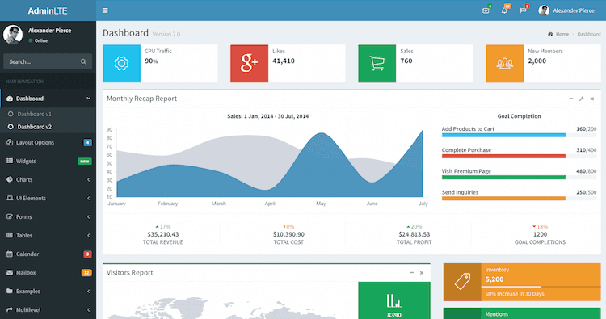
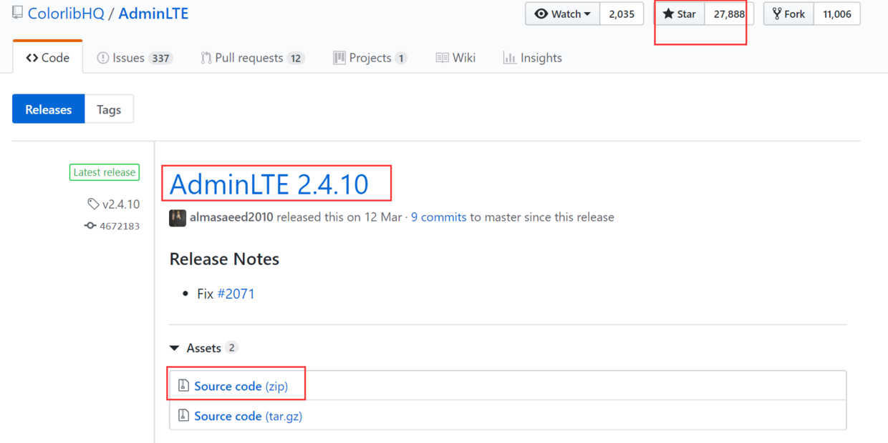
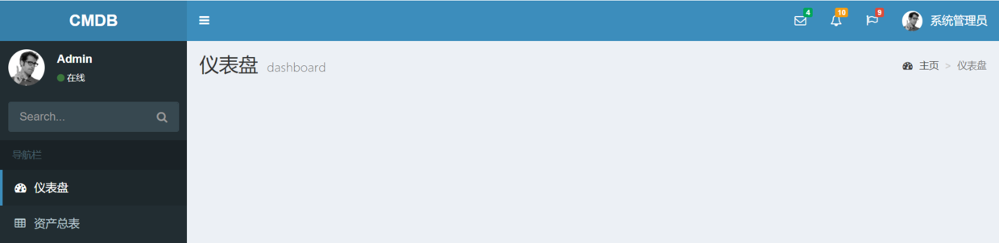
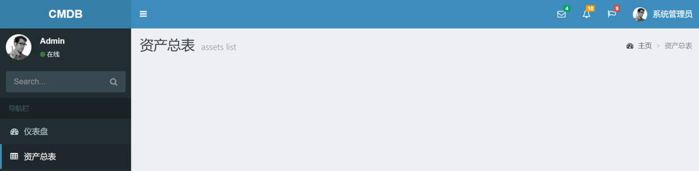
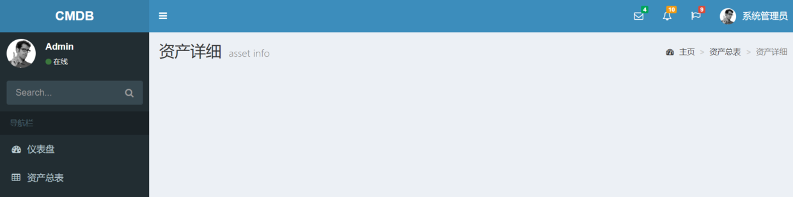

9.前端框架AdminLTE
作为CMDB资产管理项目，必须有一个丰富、直观、酷炫的前端页面。
适合运维平台的前端框架有很多，开源的也不少，这里选用的是AdminLTE。

AdminLTE托管在GitHub上，可以通过下面的地址下载：
https://github.com/ColorlibHQ/AdminLTE/releases

这里我们下载的是2.4.10版本，其官方文档地址：https://adminlte.io/docs/2.4/installation AdminLTE自带JQuery和Bootstrap3框架插件，无需另外下载。
AdminLTE自带多种配色皮肤，可根据需要实时调整。
AdminLTE是移动端自适应的，无需单独考虑。
AdminLTE自带大量插件，比如表格、Charts等等，可根据需要载入。
一、创建base.html
AdminLTE源文件根目录下有个starter.html页面文件，可以利用它修改出我们CMDB项目需要的基本框架。
在项目的根目录cmdb下新建static目录，在settings文件中添加下面的配置：
STATICFILES_DIRS = [
os.path.join(BASE_DIR, "static"),
]
为了以后扩展的方便，在CMDB/static/目录下再创建一级目录adminlet-2.4.10，将 AdminLTE源文件包里的bower_components、dist和plugins三个文件夹，全部拷贝到adminlet-2.4.10目录中，这样做的话文件会比较大，比较多，但可以防止出现引用文件找不到、插件缺失等情况的发生，等以后对AdminLTE非常熟悉了，可以对其中无用的文件进行删减。
在cmdb根目录下的templates目录中，新建base.html文件，将AdminLTE源文件包中的starter.html中的内容拷贝过去。然后，根据我们项目的具体情况修改文件引用、页面框架、title、CSS、主体和script块。这一部分工作量还是蛮大的，很繁琐，下面给出成品：
{% load static %}
<!DOCTYPE html>
<!--
This is a starter template page. Use this page to start your new project from
scratch. This page gets rid of all links and provides the needed markup only.
-->
<html>
<head>
<meta charset="utf-8">
<meta http-equiv="X-UA-Compatible" content="IE=edge">
<title>{% block title %}base{% endblock %}</title>
<!-- Tell the browser to be responsive to screen width -->
<meta content="width=device-width, initial-scale=1, maximum-scale=1, user-scalable=no" name="viewport">
<link rel="stylesheet" href="{% static 'adminlet-2.4.10/bower_components/bootstrap/dist/css/bootstrap.min.css' %}">
<!-- Font Awesome -->
<link rel="stylesheet" href="{% static 'adminlet-2.4.10/bower_components/font-awesome/css/font-awesome.min.css' %}">
<!-- Ionicons -->
<link rel="stylesheet" href="{% static 'adminlet-2.4.10/bower_components/Ionicons/css/ionicons.min.css' %}">
<!-- Theme style -->
<link rel="stylesheet" href="{% static 'adminlet-2.4.10/dist/css/AdminLTE.min.css' %}">
<!-- AdminLTE Skins. We have chosen the skin-blue for this starter
page. However, you can choose any other skin. Make sure you
apply the skin class to the body tag so the changes take effect. -->
<link rel="stylesheet" href="{% static 'adminlet-2.4.10/dist/css/skins/skin-blue.min.css' %}">
{% block css %}{% endblock %}
</head>
<!--
BODY TAG OPTIONS:
=================
Apply one or more of the following classes to get the
desired effect
|---------------------------------------------------------|
| SKINS | skin-blue |
| | skin-black |
| | skin-purple |
| | skin-yellow |
| | skin-red |
| | skin-green |
|---------------------------------------------------------|
|LAYOUT OPTIONS | fixed |
| | layout-boxed |
| | layout-top-nav |
| | sidebar-collapse |
| | sidebar-mini |
|---------------------------------------------------------|
-->
<body class="hold-transition skin-blue sidebar-mini">
<div class="wrapper">
<!-- Main Header -->
<header class="main-header">
<!-- Logo -->
<a href="#" class="logo">
<!-- mini logo for sidebar mini 50x50 pixels -->
<span class="logo-mini"><b>CMDB</b></span>
<!-- logo for regular state and mobile devices -->
<span class="logo-lg"><b>CMDB</b></span>
</a>
<!-- Header Navbar -->
<nav class="navbar navbar-static-top" role="navigation">
<!-- Sidebar toggle button-->
<a href="#" class="sidebar-toggle" data-toggle="push-menu" role="button">
<span class="sr-only">Toggle navigation</span>
</a>
<!-- Navbar Right Menu -->
<div class="navbar-custom-menu">
<ul class="nav navbar-nav">
<!-- Messages: style can be found in dropdown.less-->
<li class="dropdown messages-menu">
<!-- Menu toggle button -->
<a href="#" class="dropdown-toggle" data-toggle="dropdown">
<i class="fa fa-envelope-o"></i>
<span class="label label-success">4</span>
</a>
<ul class="dropdown-menu">
<li class="header">You have 4 messages</li>
<li>
<!-- inner menu: contains the messages -->
<ul class="menu">
<li><!-- start message -->
<a href="#">
<div class="pull-left">
<!-- User Image -->
<img src="{% static 'adminlet-2.4.10/dist/img/user2-160x160.jpg' %}" class="img-circle" alt="User Image">
</div>
<!-- Message title and timestamp -->
<h4>
Support Team
<small><i class="fa fa-clock-o"></i> 5 mins</small>
</h4>
<!-- The message -->
<p>Why not buy a new awesome theme?</p>
</a>
</li>
<!-- end message -->
</ul>
<!-- /.menu -->
</li>
<li class="footer"><a href="#">See All Messages</a></li>
</ul>
</li>
<!-- /.messages-menu -->
<!-- Notifications Menu -->
<li class="dropdown notifications-menu">
<!-- Menu toggle button -->
<a href="#" class="dropdown-toggle" data-toggle="dropdown">
<i class="fa fa-bell-o"></i>
<span class="label label-warning">10</span>
</a>
<ul class="dropdown-menu">
<li class="header">You have 10 notifications</li>
<li>
<!-- Inner Menu: contains the notifications -->
<ul class="menu">
<li><!-- start notification -->
<a href="#">
<i class="fa fa-users text-aqua"></i> 5 new members joined today
</a>
</li>
<!-- end notification -->
</ul>
</li>
<li class="footer"><a href="#">View all</a></li>
</ul>
</li>
<!-- Tasks Menu -->
<li class="dropdown tasks-menu">
<!-- Menu Toggle Button -->
<a href="#" class="dropdown-toggle" data-toggle="dropdown">
<i class="fa fa-flag-o"></i>
<span class="label label-danger">9</span>
</a>
<ul class="dropdown-menu">
<li class="header">You have 9 tasks</li>
<li>
<!-- Inner menu: contains the tasks -->
<ul class="menu">
<li><!-- Task item -->
<a href="#">
<!-- Task title and progress text -->
<h3>
Design some buttons
<small class="pull-right">20%</small>
</h3>
<!-- The progress bar -->
<div class="progress xs">
<!-- Change the css width attribute to simulate progress -->
<div class="progress-bar progress-bar-aqua" style="width: 20%" role="progressbar"
aria-valuenow="20" aria-valuemin="0" aria-valuemax="100">
<span class="sr-only">20% Complete</span>
</div>
</div>
</a>
</li>
<!-- end task item -->
</ul>
</li>
<li class="footer">
<a href="#">View all tasks</a>
</li>
</ul>
</li>
<!-- User Account Menu -->
<li class="dropdown user user-menu">
<!-- Menu Toggle Button -->
<a href="#" class="dropdown-toggle" data-toggle="dropdown">
<!-- The user image in the navbar-->
<img src="{% static 'adminlet-2.4.10/dist/img/user2-160x160.jpg' %}" class="user-image" alt="User Image">
<!-- hidden-xs hides the username on small devices so only the image appears. -->
<span class="hidden-xs">系统管理员</span>
</a>
<ul class="dropdown-menu">
<!-- The user image in the menu -->
<li class="user-header">
<img src="{% static 'adminlet-2.4.10/dist/img/user2-160x160.jpg' %}" class="img-circle" alt="User Image">
<p>
系统管理员
<small>2019-4-16</small>
</p>
</li>
<!-- Menu Body -->
<li class="user-body">
<div class="row">
<div class="col-xs-4 text-center">
<a href="#">Followers</a>
</div>
<div class="col-xs-4 text-center">
<a href="#">Sales</a>
</div>
<div class="col-xs-4 text-center">
<a href="#">Friends</a>
</div>
</div>
<!-- /.row -->
</li>
<!-- Menu Footer-->
<li class="user-footer">
<div class="pull-left">
<a href="#" class="btn btn-default btn-flat">Profile</a>
</div>
<div class="pull-right">
<a href="#" class="btn btn-default btn-flat">Sign out</a>
</div>
</li>
</ul>
</li>
<!-- Control Sidebar Toggle Button -->
</ul>
</div>
</nav>
</header>
<!-- Left side column. contains the logo and sidebar -->
<aside class="main-sidebar">
<!-- sidebar: style can be found in sidebar.less -->
<section class="sidebar">
<!-- Sidebar user panel (optional) -->
<div class="user-panel">
<div class="pull-left image">
<img src="{% static 'adminlet-2.4.10/dist/img/user2-160x160.jpg' %}" class="img-circle" alt="User Image">
</div>
<div class="pull-left info">
<p>Admin</p>
<!-- Status -->
<a href="#"><i class="fa fa-circle text-success"></i>在线</a>
</div>
</div>
<!-- search form (Optional) -->
<form action="#" method="get" class="sidebar-form">
<div class="input-group">
<input type="text" name="q" class="form-control" placeholder="Search...">
<span class="input-group-btn">
<button type="submit" name="search" id="search-btn" class="btn btn-flat"><i class="fa fa-search"></i>
</button>
</span>
</div>
</form>
<!-- /.search form -->
<!-- Sidebar Menu -->
<ul class="sidebar-menu" data-widget="tree">
<li class="header">导航栏</li>
<!-- Optionally, you can add icons to the links -->
<li><a href="{% url 'assets:dashboard' %}"><i class="fa fa-dashboard"></i> <span>仪表盘</span></a></li>
<li><a href="{% url 'assets:index' %}"><i class="fa fa-table"></i> <span>资产总表</span></a></li>
</ul>
<!-- /.sidebar-menu -->
</section>
<!-- /.sidebar -->
</aside>
<!-- Content Wrapper. Contains page content -->
<div class="content-wrapper">
{% block breadcrumb %}{% endblock %}
<!-- Main content -->
<section class="content container-fluid">
{% block content %}{% endblock %}
</section>
<!-- /.content -->
</div>
<!-- /.content-wrapper -->
<!-- Main Footer -->
<footer class="main-footer">
<!-- To the right -->
<div class="pull-right hidden-xs">
http://localhost:8000/assets/dashboard/#
</div>
<!-- Default to the left -->
<strong>Copyright © 2020 <a href="http://localhost:8000/assets/dashboard/#" target="_blank">CMDB项目测试</a>.</strong> All rights reserved.
</footer>
</div>
<!-- ./wrapper -->
<!-- REQUIRED JS SCRIPTS -->
<!-- jQuery 3 -->
<script src="{% static 'adminlet-2.4.10/bower_components/jquery/dist/jquery.min.js' %}"></script>
<!-- Bootstrap 3.3.7 -->
<script src="{% static 'adminlet-2.4.10/bower_components/bootstrap/dist/js/bootstrap.min.js' %}"></script>
<!-- AdminLTE App -->
<script src="{% static 'adminlet-2.4.10/dist/js/adminlte.min.js' %}"></script>
<script>
$('ul.sidebar-menu li').each(function (i) {
if($(this).children().first().attr('href')==='{{ request.path }}'){
$(this).addClass('active');
}else{
}
})
</script>
{% block script %}{% endblock %}
</body>
</html>
其中，在代码的底部，为了让侧边栏根据当前url的不同，实现不同的激活active状态，编写了一段简单的js代码：
<script>
$('ul.sidebar-menu li').each(function(i){
if($(this).children().first().attr('href')==='{{ request.path }}'){
$(this).addClass('active');
}else{
}
});
</script>
二、创建路由、视图
这里设计了三个视图和页面，分别是：
- dashboard：仪表盘，图形化的数据展示
- index：资产总表，表格的形式展示资产信息
- detail：单个资产的详细信息页面
将assets/urls.py修改成下面的样子：
from django.urls import path
from assets import views
app_name = 'assets'
urlpatterns = [
path('report/', views.report, name='report'),
path('dashboard/', views.dashboard, name='dashboard'),
path('index/', views.index, name='index'),
path('detail/<int:asset_id>/', views.detail, name="detail"),
path('', views.dashboard),
]
在assets/views.py中，增加下面三个视图：
from django.shortcuts import get_object_or_404
def index(request):
assets = models.Asset.objects.all()
return render(request, 'assets/index.html', locals())
def dashboard(request):
pass
return render(request, 'assets/dashboard.html', locals())
def detail(request, asset_id):
"""
以显示服务器类型资产详细为例，安全设备、存储设备、网络设备等参照此例。
:param request:
:param asset_id:
:return:
"""
asset = get_object_or_404(models.Asset, id=asset_id)
return render(request, 'assets/detail.html', locals())
注意需要提前from django.shortcuts import get_object_or_404导入get_object_or_404()方法，这是一个常用的内置方法。
三、创建模版
1.dashboard.html
在assets目录下创建templates/assets/dashboard.html文件，写入下面的代码：
{% extends 'base.html' %}
{% load static %}
{% block title %}仪表盘{% endblock %}
{% block css %}{% endblock %}
{% block breadcrumb %}
<!-- Content Header (Page header) -->
<section class="content-header">
<h1>
仪表盘
<small>dashboard</small>
</h1>
<ol class="breadcrumb">
<li><a href="#"><i class="fa fa-dashboard"></i> 主页</a></li>
<li class="active">仪表盘</li>
</ol>
</section>
{% endblock %}
{% block content %}
{% endblock %}
{% block script %}
{% endblock %}
2.index.html
在assets目录下创建templates/assets/index.html文件，写入下面的代码：
{% extends 'base.html' %}
{% load static %}
{% block title %}资产总表{% endblock %}
{% block css %}{% endblock %}
{% block breadcrumb %}
<!-- Content Header (Page header) -->
<section class="content-header">
<h1>
资产总表
<small>assets list</small>
</h1>
<ol class="breadcrumb">
<li><a href="#"><i class="fa fa-dashboard"></i> 主页</a></li>
<li class="active">资产总表</li>
</ol>
</section>
{% endblock %}
{% block content %}
{% endblock %}
{% block script %}
{% endblock %}
3.detail.html
在assets目录下创建templates/assets/detail.html文件，写入下面的代码：
{% extends 'base.html' %}
{% load static %}
{% block title %}资产详细{% endblock %}
{% block css %}
{% endblock %}
{% block breadcrumb %}
<!-- Content Header (Page header) -->
<section class="content-header">
<h1>
资产详细
<small>asset info</small>
</h1>
<ol class="breadcrumb">
<li><a href="#"><i class="fa fa-dashboard"></i> 主页</a></li>
<li>资产总表</li>
<li class="active">资产详细</li>
</ol>
</section>
{% endblock %}
{% block content %}
{% endblock %}
{% block script %}
{% endblock %}
以上三个模板都很简单，就是下面的流程：
- extends继承‘base.html’；
- {% load static %}载入静态文件；
- {% block title %}资产详细{% endblock %}，定制title;
- {% block css %}，载入当前页面的专用CSS文件；
- {% block breadcrumb %}定制顶部面包屑导航;
- {% block script %}，载入当前页面的专用js文件；
- 最后在{% block content %}中， 填充页面的主体内容
四、访问页面
重启CMDB服务器，访问http://192.168.0.100:8000/assets/dashboard/，可以看到下面的页面。

访问http://192.168.0.100:8000/assets/index/，可以看到下面的页面：

访问http://192.168.0.100:8000/assets/detail/1/，可以看到下面的页面(需要已经有了资产对象)：

如果你的配色和我的不一样，没关系，都可以调整的，在base.html中有说明注释。